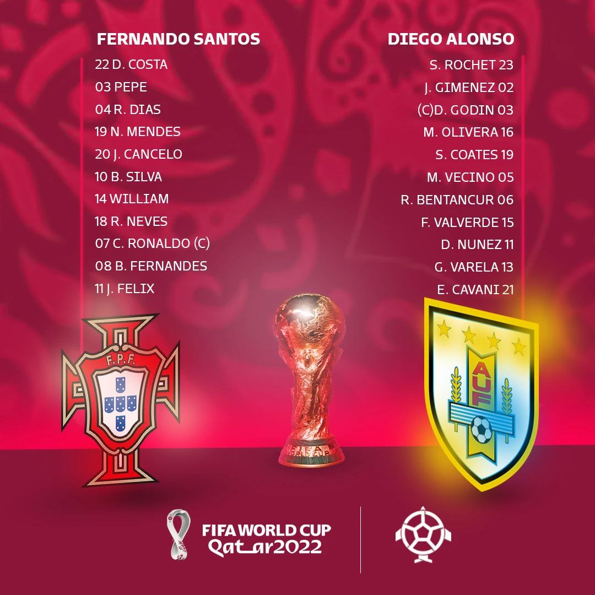
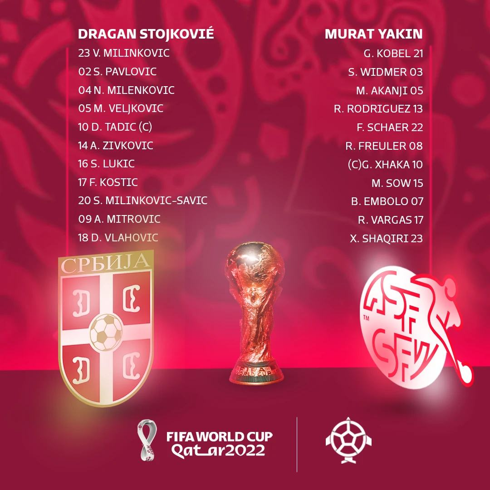
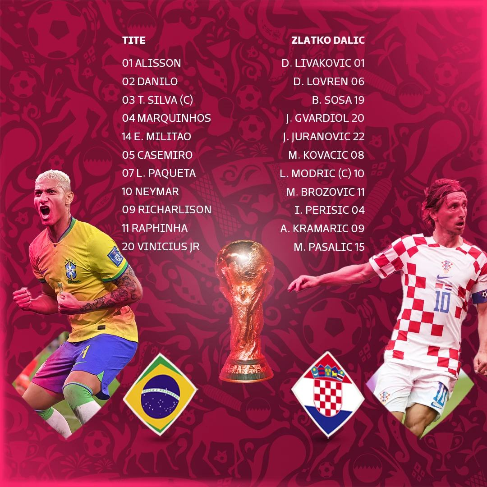
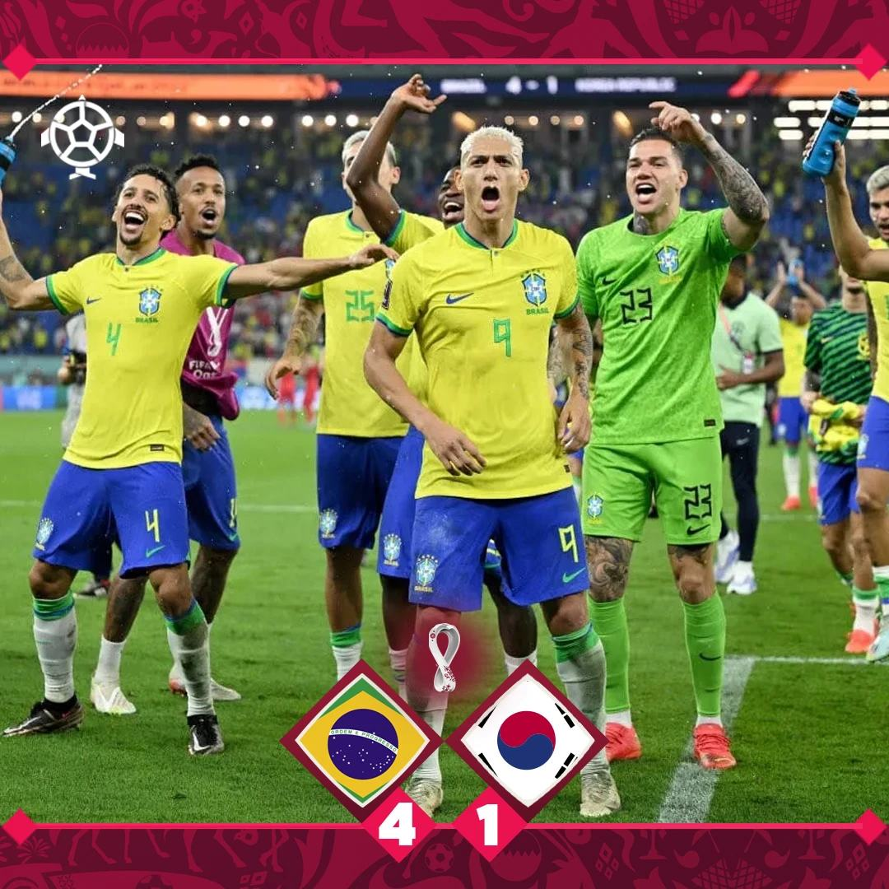
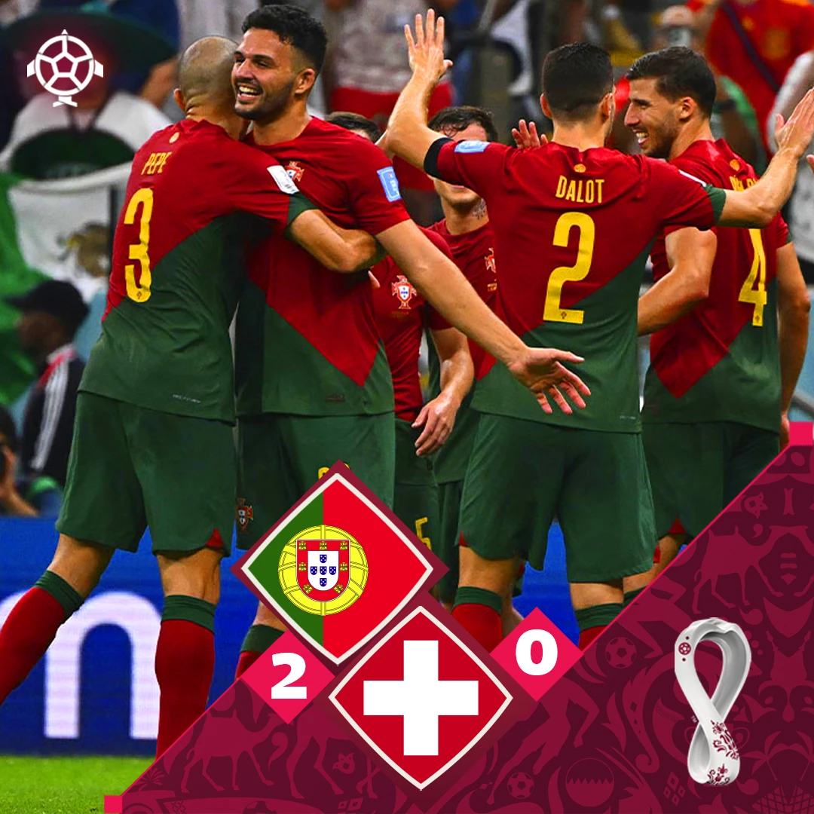

Archivo / Branding y redes / N.º 09
Qatar 2022

Ficha N.º 09
Qatar 2022
- Cliente
- Cobertura del Mundial para redes
- Mi rol
- Diseño gráfico y sistema para redes
- Año
- 2022
- Herramientas
- Photoshop, Illustrator
Sistema de piezas para redes durante la Copa Mundial de la FIFA Qatar 2022.
Grupos, sedes, alineaciones, resultados y cuadro final con un mismo sistema en granate.
Banderas en rombo, marcadores grandes y fotografía de partido para publicar el mismo día de cada juego.
37piezas
8sedes
32selecciones














